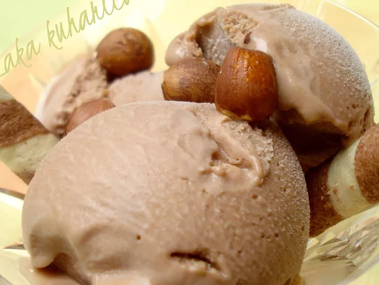

Nutella Ice Cream

Description
This exquisite homemade Nutella ice cream is full of nutty flavor, and everyone will simply love it. Nutella gives this ice cream an unbelievable hazelnut taste.
Ingredients
- 2 cups whole milk
- 1 cup heavy cream, divided
- 4 large egg yolks
- 1/2 teaspon vanilla extract
- 1/2 cup cocoa hazelnut spread (such as Nutella®)
- 1 ounce hazelnuts, crushed, or as needed for garnish
Steps
- Combine milk, cream, and 1/2 cup sugar in a saucepan over medium heat. Cook until sugar dissolves, about 5 minutes.
- Beat egg yolks with the remaining sugar in a bowl with an electric mixer until eggs become thick and pale yellow, about 4 minutes.
- Pour 1/2 cup warm milk mixture into egg mixture and stir. Add this mixture back into the saucepan. Cook over very low heat, stirring constantly, until the mixture becomes thick enough to coat the back of a wooden spoon, 7 to 10 minutes.
- Place a strainer over a bowl and pour the warm custard mixture through the strainer. Stir in vanilla and hazelnut spread until it dissolves.
- Chill mixture completely, about 1 hour. Pour into an ice cream maker and churn until frozen according to manufacturer’s instructions, 15 to 20 minutes.
- Transfer to a plastic container and place in the freezer for an hour before serving. Top with crushed hazelnuts for serving.